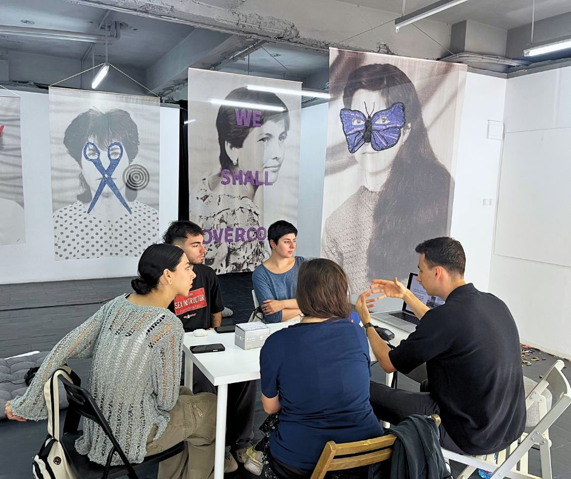
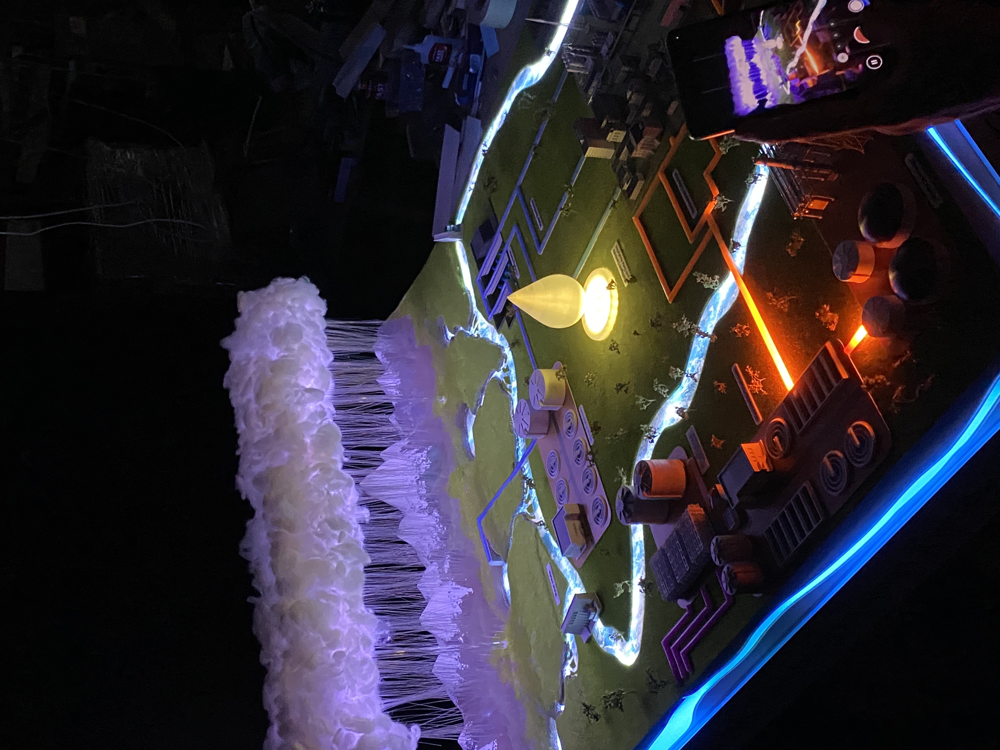
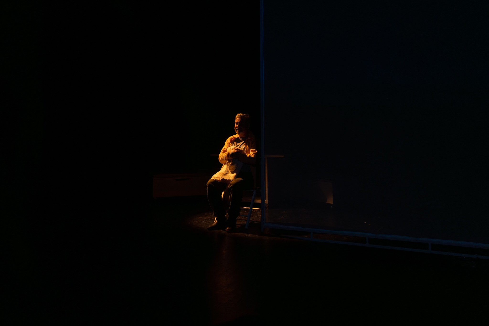
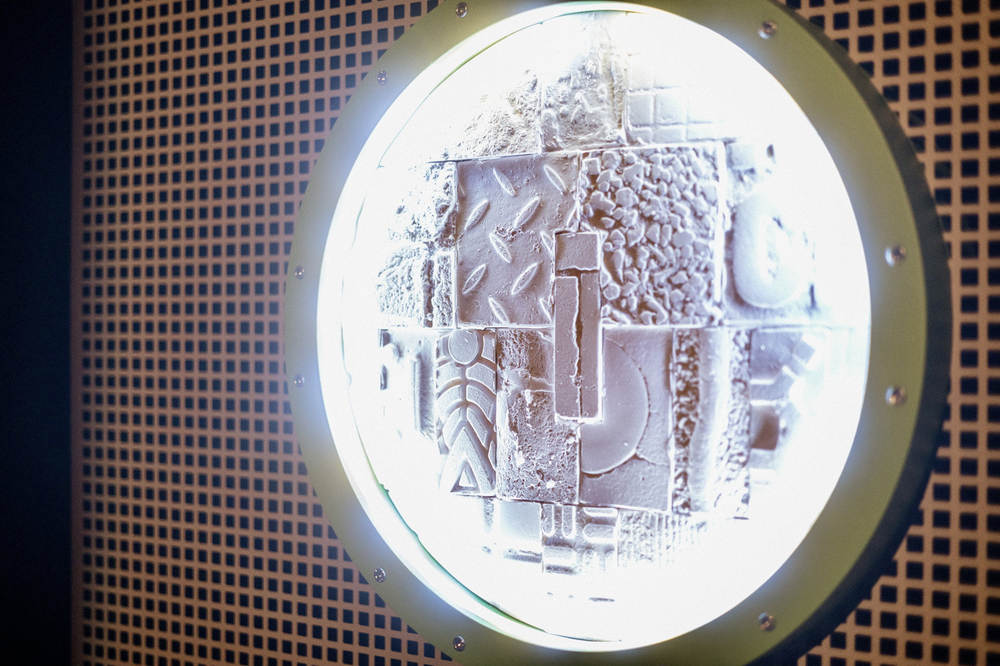
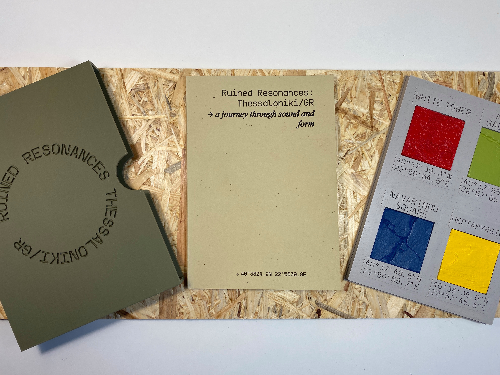
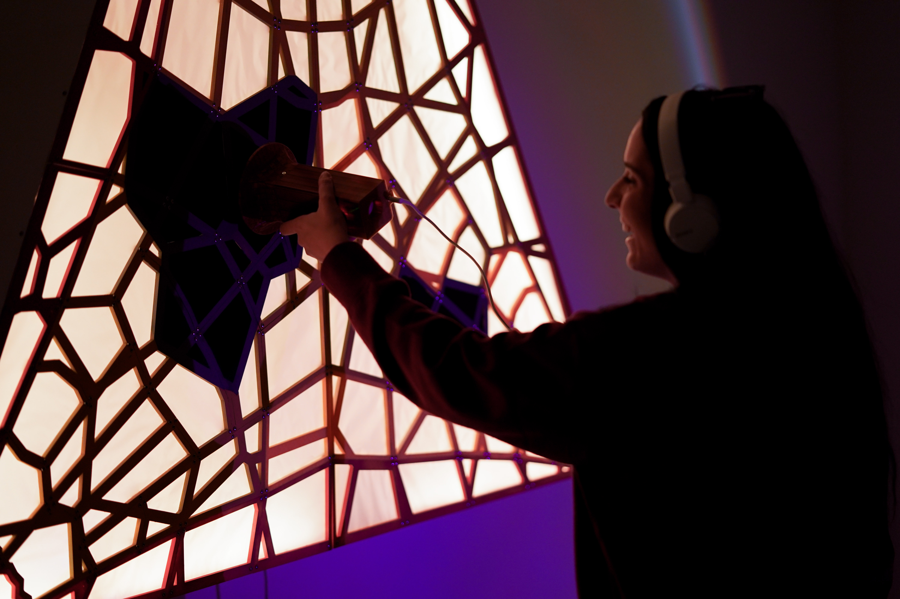
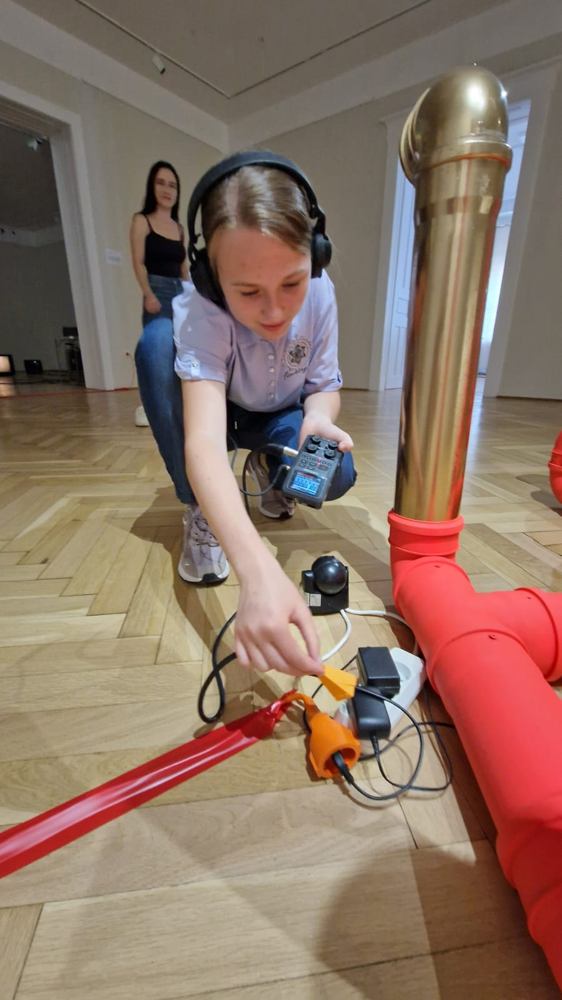

2025 > Contact Mics and Preamps workshop at CAV Gallery, Bucharest
As this year’s Artists Play with Time project came to an end, I was invited to lead a workshop on building contact microphones at CAV Gallery, Bucharest.

As this year’s Artists Play with Time project came to an end, I was invited to lead a workshop on building contact microphones at CAV Gallery, Bucharest.

In collaboration with FabLab Bucharest, I worked on a Fresh Water Generator concept model for YOKOGAWA.

Following its debut in the Unbound Echoes exhibition at WASP Bucharest, Beyond the Noise, the Concrete Speaks continues its journey with a second iteration in Brașov. This evolving series explores the memory of space through resonance, field recordings, and layered sonic narratives.

I had the pleasure of creating the sound realm for the theatre play “Unul dintre noi” at Teatrul de Comedie, Bucharest.

As a tribute to Paul Neagu and his palpable art manifesto, I unveiled the first work in a series exploring the urban scape through sound and touch, entitled “Beyond the noise, the concrete speaks”.

With the help of the Culture Moves Europe mobility program, "Ruined Resonances" broke boundaries for the first time letting us explore and add a new set of locations to our cross-modal archive.

During the Fusion Air Residency, I collaborated with scientists from the Institute for Space Science, Maximilian Teodorescu and Marius Echim. Together we built Solara, an interactive installation exploring the paradoxical relationship we have with the sun.
As an artist chosen by the RYT team I made i:105, constructed from recycled electronic waste. I also led workshops across Reșița, Arad, Brașov, and Bucharest, teaching participants to build EMF microphones and creatively interpret electromagnetic fields.

During the Fusion Air Residency, I collaborated with scientists from the Institute for Space Science. Our work culminated in Solara, exploring how we experience the sun through paradoxical perspectives.
A quick look from the DivAirCity Day at Piațeta Italiana in Bucharest and my stand where I used air quality values to plot a series of generative drawings.